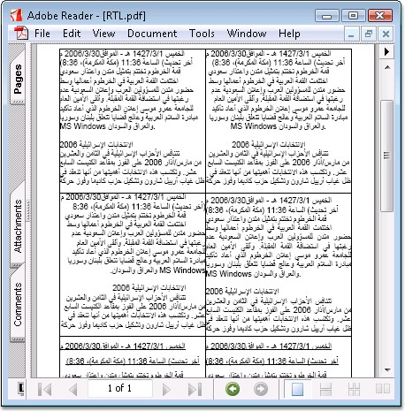

Essential PDF provides support for drawing RTL languages into the PDF document.
Middle eastern languages such as Hebrew and Arabic are written predominantly from right-to-left. Numbers are written with the most significant digit left-most, just as in European or other left-to-right text. Languages written in left-to-right scripts are often mixed; hence the complete document is bidirectional in nature; a mix of both right-to-left (RTL) and left-to-right (LTR) writing. Text written in the Hebrew and Arabic languages are often referred to as bidirectional or "bidi" in short.
|
[C#]
//Set the font with unicode option Font f = new Font("Arial", 14); PdfFont font = new PdfTrueTypeFont(f, true);
//Set the format for string PdfStringFormat format = new PdfStringFormat();
//Set the format as RTL type format.RightToLeft = true;
//Set the alignment format.Alignment = PdfTextAlignment.Right;
//Draw the RTL text page.Graphics.DrawString(text, font, brush, rect, format); |
|
[VB.NET]
'Set the font with unicode option Dim f As Font = New Font("Arial", 14) Dim font As PdfFont = New PdfTrueTypeFont(f, True)
'Set the format for string Dim format As PdfStringFormat = New PdfStringFormat()
'Set the format as RTL type format.RightToLeft = True
'Set the alignment format.Alignment = PdfTextAlignment.Right
'Draw the RTL text page.Graphics.DrawString(text, font, brush, rect, format) |

Figure 37: PDF with RTL Support